Botanical signal.
Hyperspace devotion.
Twelve original symbolic cannabis, lysergic-light, mushroom, and DMT-inspired crucifix artworks for adults.
Original symbolic art only: no brands, copied blotter art, dosage, instructions, sales language, consumption scene, readable text, or gore.
Printed to order; price and delivery confirmed before payment.
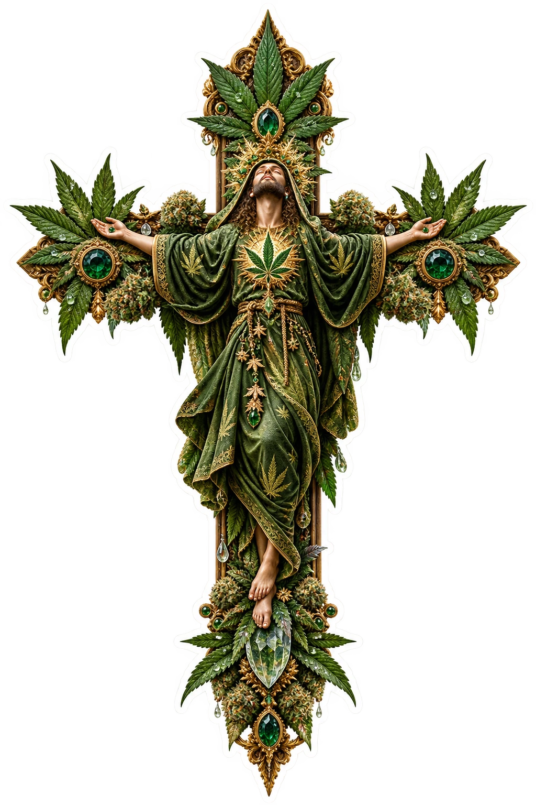
Cannabis Emerald Reliquary
Twelve original symbolic cannabis, lysergic-light, mushroom, and DMT-inspired crucifix artworks for adults.
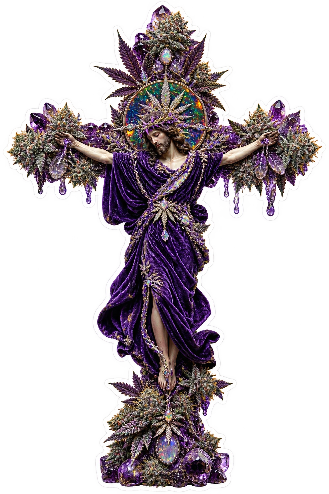
Cannabis Purple Resin Crystal
Twelve original symbolic cannabis, lysergic-light, mushroom, and DMT-inspired crucifix artworks for adults.
Cannabis Stained Glass Leaf
Twelve original symbolic cannabis, lysergic-light, mushroom, and DMT-inspired crucifix artworks for adults.
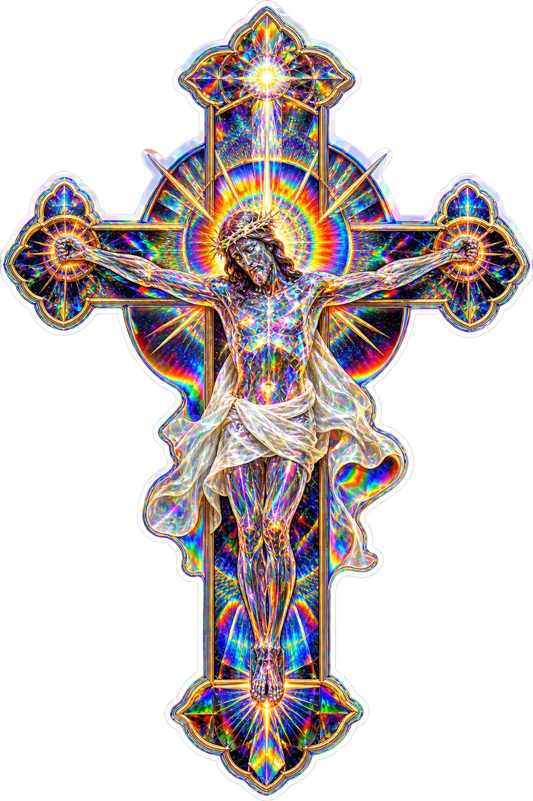
Lsd Acid Spectrum Diffraction
Twelve original symbolic cannabis, lysergic-light, mushroom, and DMT-inspired crucifix artworks for adults.
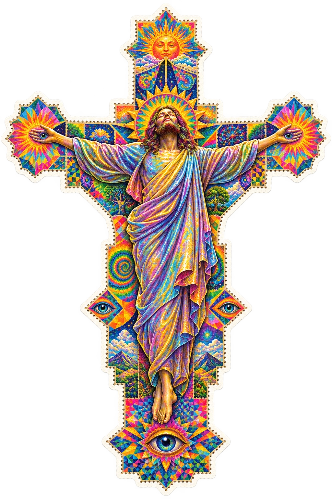
Lsd Blotter Geometry
Twelve original symbolic cannabis, lysergic-light, mushroom, and DMT-inspired crucifix artworks for adults.
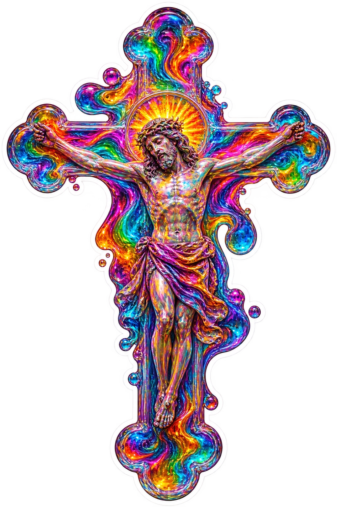
Lsd Liquid Light
Twelve original symbolic cannabis, lysergic-light, mushroom, and DMT-inspired crucifix artworks for adults.
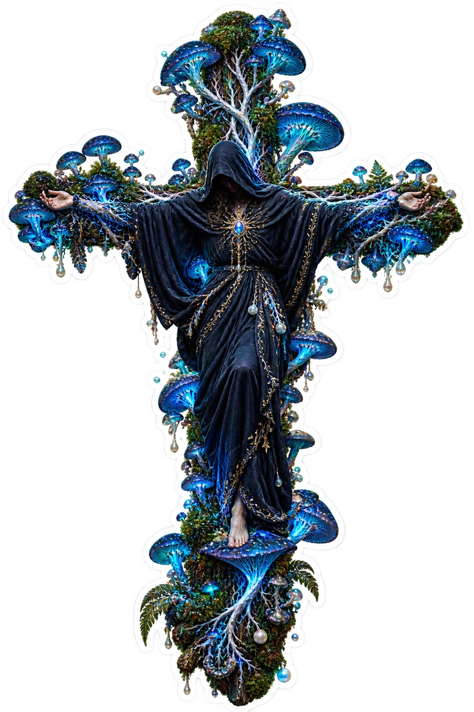
Mushroom Bioluminescent Mycelium
Twelve original symbolic cannabis, lysergic-light, mushroom, and DMT-inspired crucifix artworks for adults.
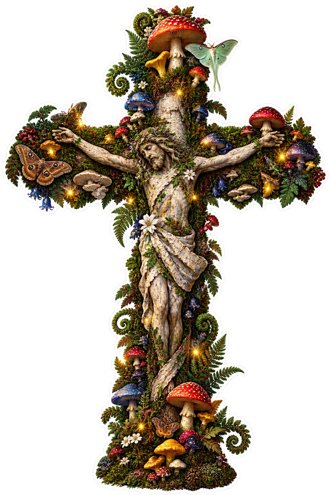
Mushroom Enchanted Forest
Twelve original symbolic cannabis, lysergic-light, mushroom, and DMT-inspired crucifix artworks for adults.
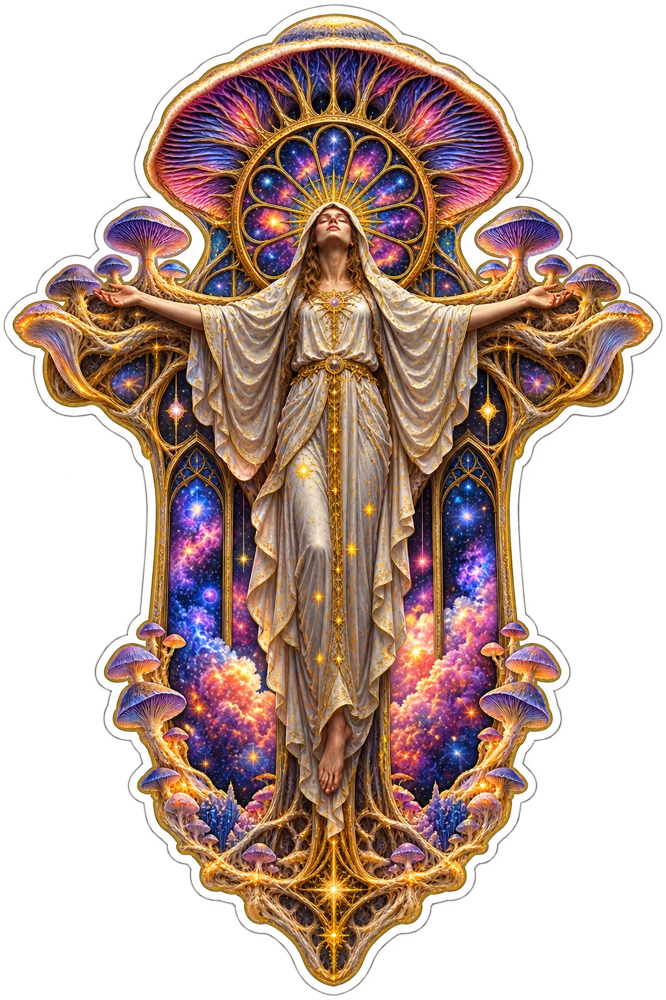
Mushroom Cosmic Spore Cathedral
Twelve original symbolic cannabis, lysergic-light, mushroom, and DMT-inspired crucifix artworks for adults.
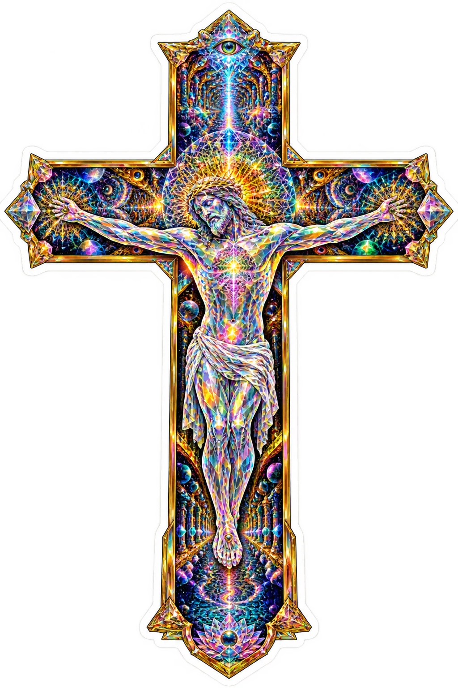
Dmt Crystalline Hyperspace
Twelve original symbolic cannabis, lysergic-light, mushroom, and DMT-inspired crucifix artworks for adults.
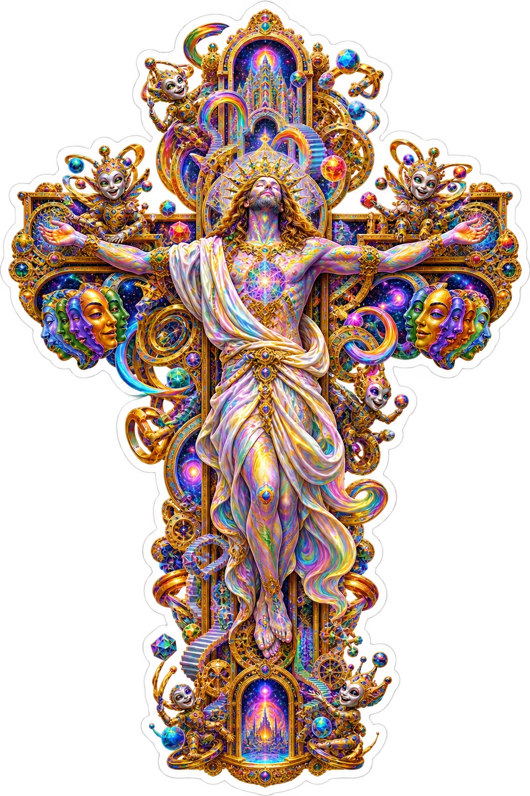
Dmt Machine Geometry
Twelve original symbolic cannabis, lysergic-light, mushroom, and DMT-inspired crucifix artworks for adults.
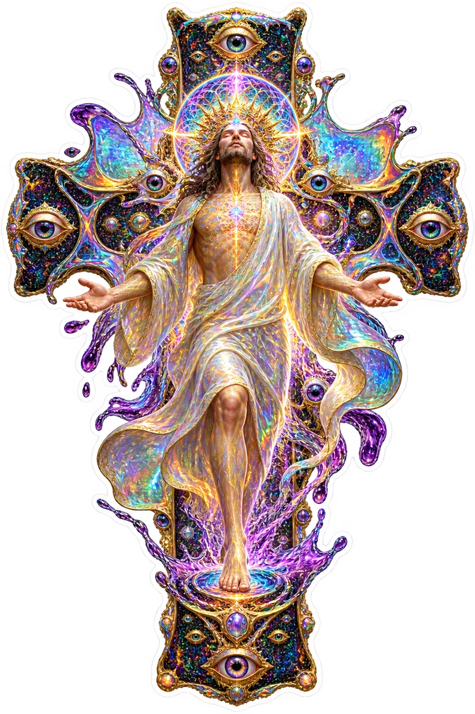
Dmt Iridescent Portal
Twelve original symbolic cannabis, lysergic-light, mushroom, and DMT-inspired crucifix artworks for adults.